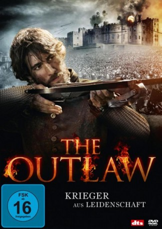
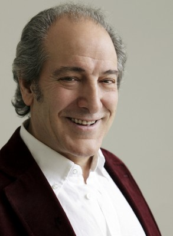

#4424 The Outlaw - Krieger aus Leidenschaft
Alternativ: The Outlaw (Englischer Titel)
 
 IMDB-Wertung: 6.1 / 10
IMDB-Wertung: 6.1 / 10  Metascore: 0
Metascore: 0 
Spanien im späten 16. Jahrhundert: Der Dichter Lope de Vega (Alberto Ammann) kehrt endlich aus einem furchtbaren Söldnerkrieg zurück und hat einiges an Beute gemacht. Nun will er mit den kriegerischen Machenschaften nichts mehr zu tun haben und sich voll und ganz seiner Leidenschaft widmen: dem Theater. De Vega hat vor, das Theater in Spanien zu revolutionieren. Bald findet sich dafür im Intendanten Velazques (Juan Diego) ein Weggefährte und Verbündeter. Velazques will de Vega bei seinem Vorhaben unterstützen. Allerdings ist de Vega in die Tochter von Velazques verliebt und kann nicht von ihr lassen, obwohl er verheiratet ist. Auch Velazques Tochter ist bereits vergeben, was die Angelegenheit noch brisanter macht. Letztlich kommt es zu einem Streit zwischen de Vega und seinem Verbündeten. Aus Rache veröffentlicht de Vega ein satirisches Pamphlet über seinen einstigen Freund Velazques und muss sich dafür schließlich vor Gericht verantworten.
Jahr: 2010
Dauer: 109 Minuten
FSK: 16
Land: Studio: Koch MediaTonspuren:
Untertitel:
Auflösung: SD (944x400) Größe: 1413 MB
Genre: Drama, Geschichte, Biographie
Regisseur: Andrucha Waddington
Drehbuch: Christian Alvart
Soundtrack:
Darsteller:
 Alberto Ammann als Lope
Alberto Ammann als Lope Leonor Watling als Isabel
Leonor Watling als Isabel Pilar López de Ayala als Elena
Pilar López de Ayala als Elena Antonio de la Torre als Juan
Antonio de la Torre als Juan- Juan Diego als Jerónimo
 Luis Tosar als Fray Bernardo
Luis Tosar als Fray Bernardo Antonio Dechent als Salcedo
Antonio Dechent als Salcedo- Selton Mello als Navas
- Miguel Ángel Muñoz als Perrenot
- Carla Nieto als María
 Sonia Braga als Paquita
Sonia Braga als Paquita- Héctor Colomé als Urbina
- Jordi Dauder als Porres
-  Mariano Venancio als Juez
- Marina Salas als Dama Soneto
 Dacio Caballero als Sicario 2
Dacio Caballero als Sicario 2- Karina Moscol als Palca
- Ramon Pujol als Claudio
- Puchi Lagarde als Venancia
- Félix Cubero als Portero
- Joaquín Notario als Criado Velázquez
 Tomás del Estal als Calero
Tomás del Estal als Calero- Pilar Perán als Cómica
- César Vea als Gigante
- Sebastián Fernández als Marino 1
- Antoine Moussa als Oficial Barcaza
- Lucas Trapaza als Oficial Reclutamiento
- Jon Bermúdez als Oficial Detención
- Mario Zorrilla als Sicario 1
- Canco Rodríguez als Sicario 3
- Silvia Casanova als Mujer Carta
- Alfonso Torregrosa als Dramaturgo Mayor
- Arantxa Zambrano als Mujer Agua
- Pere Brasó als Guardián
- Julián López Montero als Enfermo
- Ignacio del Moral als Espectador Conservador
- Paco Luque als Ramón
- María Jesús Hoyos als Vecina
- Fernando Sansegundo als Acusador
- Francisco Montejano als Fraile
- Juan Portillo als Cómico 1
- Daniel Román als Cómico 2
- Jon Koldo Vázquez als Cómico 3
- Sara Jiménez als Cómica 4
- Paco Ferrer als Cómico 5
- Yolanda Granado als Bailarina
- Fran De Paula als Bailarín
- Javier Aguirre als Músico Viola da Gamba
- Juan Alberto Pérez als Músico Chirimía
- Eugenio Uñón als Músico Tamborilero 1
Datei: X:\2010(N-Z)\Outlaw - Krieger aus Leidenschaft, The (2010, FSK16, 944x400).mp4 seit 15.09.2016
Festplatte: HD 2010(G-Z)-2011(A-F)
 Es gibt insgesamt 115 Filme in der Gruppe '2010(N-Z)'
Es gibt insgesamt 115 Filme in der Gruppe '2010(N-Z)'